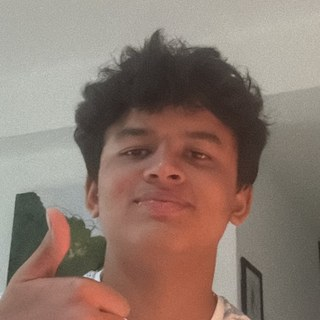

Fly it here first
My eVTOL is a 2 kg electric aircraft that lifts off like a quadcopter and cruises on a wing. I am building it for Catalyst at Singapore American School. Drag the two sticks to fly it, and watch the wing take the weight off the rotors as it speeds up.
This site is also a guide. If you want to learn how eVTOLs work, or build one of your own, follow along with my process. Start with eVTOLs for the idea, go through Electronics and Frame to see how I built mine, then use Make it yourself for the parts list, the steps and my design file.
16.8 V
Left and right: turn
Keys W S A D
Left and right: slide or bank
Arrow keys
Letting go of a stick centres it and the aircraft holds its height, like a height-hold flight mode. The left stick climbs and turns; the right stick drives the pusher propeller forward. Above about 40 km/h the wing carries everything and the four lift rotors drop to idle.
Thrust and lift calculations
Enter a weight and the top speed you want. The page works out the thrust each lift motor has to make, the pusher thrust needed at top speed, and the speed where the wing takes over. The simulator above flies with the same numbers.
Lift curve
Lift coefficient against angle of attack for this wing. Lift rises in a straight line until the wing stalls.
Show as table
Wing lift against airspeed
The most lift the wing can make at each speed. Where it crosses the weight line, the rotors can idle.
Show as table
Thrust needed against airspeed
Lift rotors hold up whatever the wing cannot. The pusher only has to beat drag.
Show as table
How it is worked out: hover thrust equals weight (mass × 9.81). Wing lift = ½ × air density × speed² × wing area × lift coefficient. Drag = ½ × air density × speed² × wing area × (zero-lift drag + induced drag). Hover power uses propeller disc theory with 60% rotor efficiency and 80% motor and ESC efficiency; pusher power assumes 55% propeller efficiency. Flight times use 80% of the battery. These are sizing estimates, not flight test results.
Why build an eVTOL
An eVTOL is an electric aircraft that takes off and lands vertically. Mine is the lift and cruise kind: four rotors lift it straight up, a pusher propeller drives it forward, and a fixed wing carries the weight once it is moving. Here is how that compares with the other ways to build a drone.
Six ways to build a drone
What lift and cruise does that the others cannot
It can go fast on little energy and it can stop in mid-air. A plane cannot stop and a quadcopter cannot cruise. The trade is carrying two propulsion systems, with one of them resting most of the flight.
The four lift rotors carry all 2 kg. This is the expensive part of the flight: about 10 minutes of battery if it only hovered.
The pusher speeds the aircraft up. Wing lift grows with the square of speed, so at about 28 km/h the wing and the rotors share the weight equally.
The wing carries everything. The lift rotors keep spinning at idle so they can correct roll and pitch instantly, because this design has no ailerons, elevator or rudder.
Speeds come from the starting numbers on the Dashboard calculator. Orange is the wing's share of the weight, blue is the rotors'.
No moving control surfaces
There are no servos or hinged flaps. The four lift rotors steer the aircraft in every phase of flight. It costs some energy and is a simpler thing to build and to debug for a first aircraft.
Printed in sections
The airframe is 3D printed in pieces small enough for a desktop printer, joined with slide-in flanged joints and stiffened with carbon fibre rods and tubes.
A camera in the nose
An FPV camera sends live video from the nose, so the aircraft can film a long stretch at speed and then hover over the part that matters.
About S$650 of parts
Every electronic part and the carbon fibre came from one hobby shop in Singapore. The full list with prices is on the Make it yourself page.
Thrilling, daunting and important
Thrilling
I came into this with almost no electrical engineering experience. I have built turbulence sensors and gloves that translate sign language, but I had never soldered a power joint, wired an ESC or set up flight firmware. My aircraft has not flown yet. What makes it thrilling is where eVTOLs are going, and how much Singapore wants them. An air taxi flew over Marina Bay in 2019, NTU unveiled Singapore's first locally built full-size eVTOL in 2026, and the Home Team is exploring air taxis for medical emergencies. Electric aircraft that need no runway could change how a dense city moves people and reaches emergencies, and I get to build a small one myself.
Daunting
Two aircraft have to work in one. Hover and wing flight each need their own calculations, and the hand-over between them is the hardest part to get right. I also had to learn to strip, solder and heat-shrink every power joint, design a printed structure that survives its own weight on one propeller, and set up flight firmware.
Important
SAS is under construction. An aircraft that cruises on a wing can film a site for longer than a quadcopter on the same battery, then stop and hover where it needs a closer look. After the first test flight I am taking it to the school's construction team to see if it is useful to them.
eVTOLs in Singapore
- Volocopter flies a piloted air taxi over Marina Bay for about two minutes, the first public look at urban air mobility here. 1
- CAAS and 23 regional aviation authorities publish shared reference materials for certifying and regulating air taxis and drones. 2
- NTU unveils Singapore's first locally designed and built full-size eVTOL demonstrator at the Singapore Airshow. It has eight lift rotors on the wings and a rear propeller for forward flight, with an 8 m wingspan. That is the same lift and cruise layout as mine at about ten times the span. 3
- HTX, the Home Team's science agency, and Vertical Aerospace agree to explore air taxis for emergency medical response. 4
Industry reporting in 2026 describes Singapore's biggest role so far as the regulator bringing the region's authorities together. 1
Why construction wants this
Drones are already working on Singapore's building sites, and the jobs they do suit an aircraft that can both cover distance and hold still.
- LTA photographs and films its worksites from the air to track progress and to run safety and environmental inspections. 5
- JTC is asking for aerial capture tools that monitor progress across a whole site. 6
- An SUTD engineering professor names high-rise inspection, land surveying and site monitoring as the most mature drone uses here. Singapore had 28,100 registered drones by December 2025. 7
- Survey companies choose winged VTOL drones for large sites because they fly faster and stay up longer than multicopters, and still take off without a runway. 8
A wing gives stable, fast, low-energy flight along a site. The rotors let the same aircraft hover over one spot. That combination is what I want to put over the construction at SAS.
- FlightGlobal, Why Asia-Pacific has become a key battleground for eVTOL developers
- CAAS, Asia-Pacific reference materials for drones and air taxis, 2 April 2025
- NTU Singapore, locally designed and built eVTOL unveiled at Singapore Airshow 2026
- The Straits Times via Asia News Network, Air taxis to be tested for emergency medical response in Singapore
- LTA Connect, Drones in the Zone
- JTC, Aerial reality capture for site-wide progress and survey monitoring
- SUTD, local drone firms are competing through innovation
- Propeller Aero, Fixed-wing VTOL drones vs quadcopters for surveying
Photos of the quadcopter, plane, tiltrotor, tail-sitter and lift and cruise drone are from the PX4 User Guide, licensed CC BY 4.0, resized. The helicopter photo is from the ArduPilot documentation, licensed CC BY-SA 3.0, cropped.
Electronics, step by step
Firmware first, then the wiring skills, then each system in the order the power and signals flow. The photos and videos are from my own bench.
Set up the firmware
The flight controller is a SpeedyBee F405 stack. It runs ArduPilot's Plane firmware, which includes a mode called QuadPlane for aircraft with lift rotors and a forward motor. I set it up in QGroundControl.
- Flash ArduPilot Plane for your flight controller board. QuadPlane is part of the standard Plane firmware, so there is nothing extra to install.
- Open QGroundControl, connect the flight controller by USB and wait for the parameters to load.
- Set Q_ENABLE to 1, reboot the flight controller and refresh the parameters. All the settings that start with Q_ now appear.
- Set Q_FRAME_CLASS to 1 for four lift motors, and Q_FRAME_TYPE to match their layout: 1 for an X frame, 3 for an H frame. The lift motors use outputs 1 to 4.
- Calibrate the accelerometer. Do the level calibration with the aircraft sitting at its cruise attitude, not flat on its wheels.
- Set the serial port wired to the ELRS receiver to RC input (mine is on TX2 and RX2), then check in the Radio tab that every stick moves the right channel.
- With the propellers off, run the motor test. Check the order and spin direction of each lift motor, then the pusher.
- Set the battery limits before any flight: BATT_WATT_MAX, Q_M_BAT_CURR_MAX and Q_M_BAT_VOLT_MIN.
- Set Q_M_SPIN_ARM so the lift motors idle whenever the aircraft is armed. I keep all four spinning at all times so they can respond fast enough.
- Tune hover first. The two settings that matter most are Q_A_RAT_RLL_P and Q_A_RAT_PIT_P, which both start at 0.25.
Parameter names and values come from the ArduPilot QuadPlane frame setup, parameter setup and setup tips pages. Because my aircraft has no control surfaces, the lift rotors have to keep helping in forward flight. My final values for that go here after flight testing.
Strip, solder and heat-shrink the wires
Every power joint on this aircraft is one I soldered. The joints took the most patience of anything in the build, because a joint that is nearly right has to be redone.
- Cut each wire to length with a little slack, so vibration does not pull on the joint.
- Strip about 5 mm of insulation without nicking the copper, then twist the strands tight.
- Slide a piece of heat shrink onto the wire before soldering, and park it away from the heat.
- Tin the wire and the pad separately: heat each one and let solder soak in.
- Hold the tinned wire on the tinned pad and heat both until the solder flows into one shiny joint.
- The battery pads on the ESC are large pieces of copper and pull heat away fast. They needed a more powerful iron and a longer hold than the small signal pads.
- Tug the wire. Look for a smooth, shiny joint with no stray strands that could short to the next pad.
- Slide the heat shrink over the joint and shrink it with hot air.
I used 3.5 mm bullet connectors between the ESCs and the motors. Swapping any two of a motor's three wires reverses its direction, so connectors make that a ten second fix.
Choose the battery
The battery is chosen last, from what the other parts need. Mine is a 4S 4200 mAh 45C lithium polymer pack. Three numbers decide it.
- Cells set the motor speed. A motor's top speed is roughly its KV rating times the voltage. My 900 KV motors on a 4S pack (14.8 V) reach about 13,300 rpm unloaded, which suits 9 inch propellers.
- Capacity is a trade against weight. More mAh means more minutes and also more grams for the rotors to lift. The Dashboard calculator shows the trade: 4200 mAh gives about 10 minutes of pure hover at 2 kg, and longer once the wing is working.
- The C rating has to cover the worst case. Maximum continuous current is capacity in amp-hours times C: 4.2 × 45 = 189 A. Hover draws about 20 A by my estimate, and five motors at full throttle draw several times that, so the pack has headroom.
Charge with a balance charger, never leave a charging pack unattended, and store packs at storage voltage.
All the hardware
Each system working on the bench
Test one system at a time, with the propellers off, before anything goes inside the airframe.
Camera and video link
A Foxeer Razer Mini camera feeds a PandaRC 5.8 GHz video transmitter and a Lollipop antenna. Never power the transmitter without its antenna attached. The PLA fuselage lets radio signals through, so antennas can sit inside it. Before building them in, power the camera and the radio together with the antennas placed as they will be on the aircraft and check for interference.
ESCs
An ESC turns the battery's DC into the three-phase power a brushless motor needs, at whatever strength the flight controller asks for. The four lift motors run from the 4-in-1 ESC in the SpeedyBee stack. The pusher has its own Hobbywing XRotor 40A.
Motors and propellers
Five 2812 900 KV motors, all with Gemfan 9047 propellers: 9 inches across with a 4.7 inch pitch. Propellers go on last. Diagonal lift motors spin the same way, and each needs the matching clockwise or anticlockwise propeller.
Radio
A Radiomaster Pocket talks ELRS to a BetaFPV Nano receiver on the flight controller. Bind the two, then move each stick and watch the channel bars respond in QGroundControl.
Four rules for the wiring
A circuit that works on the bench still has to survive a flight. These are the four rules I wire by.
Make joints that survive vibration
Reliable solder joints, and connectors with a catch wherever something unplugs.
Insulate against dust and moisture
It matters more in Singapore's humidity than in most places.
Match the voltages
A Raspberry Pi pin works at 3.3 V and 5 V can damage it. Check every connection between two boards.
Bridge levels properly
Use a voltage-reducing circuit or an optocoupler between parts that run at different voltages.
The frame
The airframe was sized in OpenVSP, modelled in Fusion 360, printed in PLA and stiffened with carbon fibre. The frame is not finished yet. Each section takes hours on the printer, so some parts are still printing and some have not been started.
Sizing the wing in OpenVSP
OpenVSP is NASA's free tool for sketching an aircraft from parameters such as span, chord and sweep, then estimating its lift and drag. I used it to check that a wing this size can carry 2 kg before modelling anything in detail.
The aerodynamics behind it
Lift = ½ × air density × speed² × wing area × lift coefficient
The distance from the front edge of the wing to the back. Span times chord is wing area. My span is fixed at 30 inches by what I can print and carry, so chord is the dial that sets how much lift the wing makes.
The angle between the chord line and the oncoming air. Tilting the wing up makes more lift, up to a limit.
How hard the wing shape works at a given angle of attack. It rises steadily with angle until the stall. The Dashboard draws this curve for my wing.
Past a critical angle the air stops following the top of the wing and lift falls away. Below about 40 km/h my wing cannot carry the aircraft at any angle, so the rotors must.
Span squared divided by wing area. Long thin wings waste less energy on the swirling air at the tips. Mine is short and wide, which costs some drag and makes it stiff and printable.
Induced drag is the price of making lift and is worst when slow. Parasitic drag is the air pushed aside by booms, motors and wheels and grows with the square of speed. The pusher has to beat the sum.
The balance point. It should sit where the three axes of rotation cross and slightly ahead of where the wing's lift acts, around a quarter of the chord back. Off-centre weight makes the motors correct constantly, which wastes battery.
The wing can slide forward or back along the fuselage to move the lift relative to the weight. Parts are placed to balance first. Counterweights are the last resort.
Modelling it in Fusion 360
Learnings I had
| What I had | What I learned | What I am doing about it |
|---|---|---|
| Fuselage sections held together by carbon rods pushed into printed holes | Rod holes do not print cleanly and an exact friction fit is hard to hit. Edge-to-edge glue joints have too little surface. | Flanged joints: one side keeps its diameter and the other has a lip that fits inside it, with room for glue. |
| A 1 mm gap in the joints | Too loose. A Bambu Lab printer can hold 0.1 to 0.2 mm. | Joints are being redrawn to that tolerance. |
| A front cover that joined straight onto the rear fuselage | That joint is weak. Make the fuselage one piece and cut the cover out of it, so the flange runs the whole way round. | Redesigning the front fuselage as one piece with a cut-out cover. |
| Two hinges and a thumbscrew on the cover | Hinges are a luxury on a cover that only opens for repairs. About four screws would do. | Still deciding between hinges and screws. |
| Carbon rods everywhere | The booms carry the lift propellers, and the worst case is the whole aircraft's weight on one of them. They need rods. Other parts may not. | Rods stay in the booms and the tail joint. Other parts are being tried without. |
| Rods pressed dry into their channels | Fill the joint with glue so no cavity is left: thin glue that wicks in, or thick glue in the hole before the rod. | Rod joints get glued full. |
| Solid rods | A pipe can be stronger than a rod for the same material, which is why race car roll cages are tubes. | I have 8 mm and 10 mm tubes as well as solid rods. The numbers are below. |
| Motor screws hidden behind the boom | Use Allen key screws, narrow the boom towards the propeller, trim its overhang, or lower the propeller for more room. | Boom redesign in progress, narrowing towards the propeller disc. |
| A thick boom meeting a thin section abruptly | Smooth the change from thick to thin. | Part of the boom redesign. |
| The wing mounted on top of the fuselage | Structurally sound. The fuselage hangs under the wing like a C-17, and the attachment surface is wider. | Kept. |
| Planning to perfect the design before printing | Print a fast, low-quality version first to check fit and mounting points, then iterate. | Trial prints come first. |
| Opening the fuselage to charge | Fit an outside charging port on a Y connector, with a switch that disconnects the flight controller. | Looking into it. |
Structural rules I now design by
Break the aircraft into systems
Flight, control, power and structure are separate problems. Define what each must do and how they connect before choosing parts.
Shape beats material
I-beams and T-beams are stronger than a plain rectangular bar of the same weight. So is a tube compared with a rod.
More infill stops paying off
A 100% solid print is not much stronger than one at about 50 to 60% infill, and it is a lot heavier. The exact figure depends on the material.
Reinforce where the screws go
Design mounting brackets into the print and give the areas around screws denser infill.
PLA is brittle
Basic PLA cracks before it bends. Rods take the bending loads, and carbon fibre filament is worth trying for the fuselage.
Build when the numbers say it flies
Start building once the calculations show lift balancing weight with power to spare. Expect to iterate after that.
Carbon fibre rods and tubes
| Stock, 1 m lengths | Material area | Bending stiffness |
|---|---|---|
| 4 mm solid rod | 12.6 mm² | 12.6 mm⁴ |
| 6 mm solid rod | 28.3 mm² | 63.6 mm⁴ |
| 8 mm tube, 6 mm bore | 22.0 mm² | 137.4 mm⁴ |
| 10 mm tube, 8 mm bore | 28.3 mm² | 289.8 mm⁴ |
Stiffness here is the second moment of area, π(D⁴ − d⁴)/64. The 10 mm tube uses exactly the same amount of carbon as the 6 mm rod and resists bending about 4.6 times better, because its material sits further from the centre.
Cutting them to length
- Measure the channel in the printed part, not the drawing, and mark the cut.
- Wrap masking tape around the mark so the fibres do not splinter.
- Cut through the tape with a fine-tooth hacksaw or a rotary tool, turning the rod as you go.
- Sand the end square and smooth.
- Wear a mask, gloves and eye protection, and wipe the dust up with a damp cloth. Carbon dust irritates skin and lungs.
- Slide the rod into one part, then slide the next part over it. Fill the joint with glue.
Make it yourself
Everything needed to build this aircraft: the parts I bought and what they cost, my final design file, and the steps in the order I did them.
Materials
Prices are what I paid at Hobby Square Singapore across three orders in September and October 2026, in Singapore dollars.
Also needed
- A 3D printer and PLA filament. I print on a Bambu Lab X1 Carbon.
- FPV goggles or a small screen for the video feed.
- Solder, heat shrink tubing and glue for the carbon rod joints.
- Allen key screws for the motor mounts and cover.
Files
My final design, free to download and change.
The whole aircraft, STL
One STL file of the final design, exported from Fusion 360. It is 5.9 MB and its dimensions are in millimetres. Open it in a slicer or any CAD program.
Build it in fourteen steps
- Set the targets. Decide the weight, the speed and the job. Mine: 2 kg, a 60 km/h cruise, and filming a construction site.
- Run the numbers. Use the Dashboard calculator to find the thrust per lift motor, the pusher thrust and the speed where the wing takes over. Do not buy anything until lift balances weight on paper.
- Choose the propulsion. Pick lift motors that each make about half the aircraft's weight in thrust, so four of them give twice the weight. Then the propellers, ESCs and battery to match.
- Buy the parts. The full list is above.
- Size the wing. Build the aircraft in OpenVSP and check its lift and drag.
- Model it in Fusion 360. The detailed steps are below.
- Trial print. Print fast and rough first. Check that sections slide together, rods fit and components reach their mounts.
- Final print. Reprint the parts that passed, with denser infill around screws.
- Cut and glue the carbon. Trim rods and tubes to length and glue every rod joint full.
- Solder the power system. Battery lead and five motors to the ESCs, with heat shrink on every joint.
- Bench test each system. Camera, ESCs, motors and radio, one at a time, propellers off.
- Set up the firmware. Follow the steps on the Electronics page.
- Assemble and balance. Fit everything, then check the centre of gravity. Move the battery or the wing before adding any counterweight.
- Get legal, then hover. Register the aircraft and complete the training below. First flights are hover only and low. Transition to wing flight comes after hover is tuned. This is the step I am on.
Rules in Singapore: an unmanned aircraft over 250 g must be registered with CAAS, and flying one over 1.5 kg needs the UA Basic Training certificate. At 2 kg this aircraft needs both. See the CAAS requirements for flying unmanned aircraft for where you may fly. The pilot is also expected to keep the aircraft in sight, which may rule out goggles; I am checking, and a screen on the radio is the fallback.
Building it in Fusion 360
- Create user parameters first: span, chord, rod diameters and joint clearance. Every sketch then updates from one table.
- Sketch the airfoil as a spline on a side plane and extrude it to make one wing panel. Split the span into panels short enough to print standing upright.
- Shell each panel to a thin wall. Add the channel for the carbon rod, close both ends and add the internal support tree.
- Add a peg and socket with a flange at each panel end, with 0.1 to 0.2 mm of clearance.
- Model the fuselage as one body. Shell it, cut the cover out, and leave a flange all the way round the opening.
- Add mounts inside the fuselage for the flight controller stack, battery, camera and video transmitter.
- Model the booms around their carbon tubes, with the lift motor mounts underneath and the boom narrowing towards each propeller.
- Model the tail and its slide-in joints to the booms.
- Assemble everything, run an interference check, and give each component its real mass to find the centre of gravity.
- Export each part and slice it for printing.
Testimonials
Feedback from three people who want to build an eVTOL and have started on the early steps. They have not built with this guide yet. This is what they told me after reviewing the site.
“I have wanted to build drones for a long time, but I did not know how to start. This site gave me a clear direction. I was also confused about which materials I needed and could not find a list anywhere, and the materials list here showed me what to get.”

“I did not know how to make the frame at all, because I did not know how to model one in Fusion 360. I had not heard of OpenVSP, where you can model an aircraft first and then bring it into Fusion. Finding that out really helped.”
“I was interested in eVTOLs, but I did not know the calculations needed to design one, like how the battery works and how lift works. With the calculator on the Dashboard I was able to work them out.”